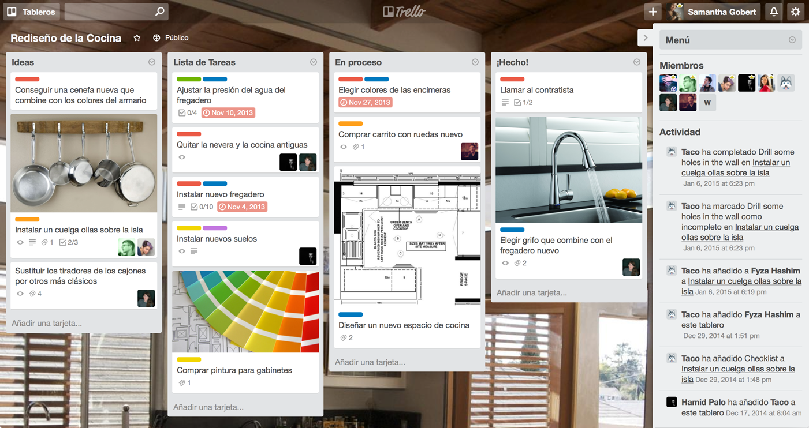

Trello es la manera gratuita, flexible y visual de organizarlo todo con cualquiera.
Deje a un lado las largas cadenas de correos electrónicos, las hojas de cálculo sin actualizar, las notas rápidas ya no tan adhesivas y el software inadecuado para gestionar sus proyectos. Trello le deja ver todo sobre su proyecto de un solo vistazo.
Regístrarse es gratis
Iniciar sesión en...
Esto es un tablero de Trello. Es una lista de listas completada con tarjetas, utilizada con un equipo o en solitario.

Arrastre y suelte tarjetas entre las listas para mostrar el progreso. Añada tantas personas como necesite y arrástrelas a las tarjetas. Añada y vuelva a ordenar las listas tal como lo necesite. Trello se adapta a su proyecto, equipo y flujo de trabajo.
Verá todo sobre su proyecto con tan solo echar un vistazo al tablero, y todo se actualiza en tiempo real. No hay nada que configurar y todo el mundo lo obtiene al instante.
Trello es simple en la superficie, pero las tarjetas tienen todo lo necesario para hacer el trabajo. Publique comentarios para obtener respuesta inmediata. Cargue archivos desde su ordenador, Google Drive, Dropbox, Box y OneDrive. Añada checklists, etiquetas, fechas de vencimiento y otros elementos. Con las notificaciones se puede asegurar de saber siempre cuándo sucede algo importante.

Trello permanece perfectamente sincronizado en todos sus dispositivos allá donde esté. Hay aplicaciones rápidas e intuitivas para la web, los teléfonos y las tabletas Android, iPhone y iPad, y Kindle Fire.


Ver todas las aplicaciones
Trello nunca le abrumará con funcionalidades que no va a utilizar. Para quienes desean aprovechar más sus tableros, existen potenciadores, como el calendario, el vencimiento de la tarjeta y las votaciones, que puede activar. Es una manera de ofrecer más sin atestarlo de cosas para todos.
Descarte las notas rápidas, hojas de cálculo, correo electrónico y el software inadecuado para gestionar sus proyectos y pase a ser una de los millones de personas que se han quedado prendadas de Trello. Puede añadir tantos tableros y tantas personas como desee con su cuenta gratuita.
Registrese.¡Es gratis!
Oh, y este es Taco, nuestro husky portavoz.
Lo verá por aquí.